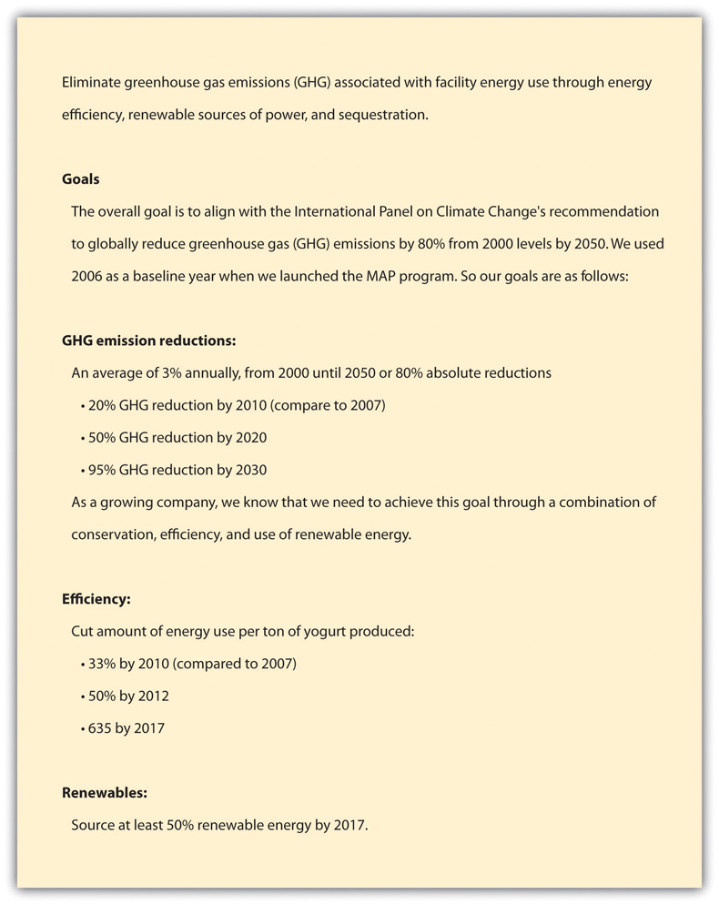
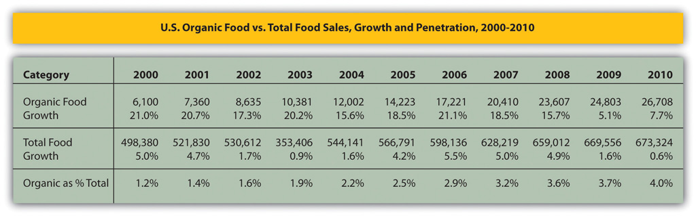

Stonyfield Farm, Inc., or Stonyfield, is an organicNatural or synthesized compounds containing carbon. Natural organic compounds are found in all living systems and in natural products, such as coal, oil, sugars, and wood (water is an inorganic compound). Synthesized organic compounds are manufactured products, such as calcium carbonate and sodium carbonate. Inorganic compounds (such as metals) are obtained usually from mineral sources. yogurt manufacturer located in Londonderry, New Hampshire. The company was founded in 1983 at Stonyfield Farm and got its start using its herd of seven jersey cows to produce organic milk. The milk was then manufactured on-site into organic yogurt using founder Samuel Kaymen’s family recipe. During the first year, Stonyfield sold $56,000 worth of product. By 2010, Stonyfield had grown to be the number one selling organic yogurt brand in the United States and the third-largest selling yogurt brand in the world with more than $375 million in revenue and with profits exceeding the industry average.
This case describes and examines Stonyfield’s sustainability strategyFrom the Greek noun strategos, meaning “the art of the general,” and the Greek verb stratego, meaning “to plan the destruction of one’s enemies through the effective use of resources.” According to Michael Porter, it is not a matter of being better at what you do; it’s a matter of being different at what you do. It identifies those major activities that link a firm’s internal environment to its external environment with the primary goal to achieve organizational purpose by creating value for customers. and its execution. This includes description of the key elements in the implementation of Stonyfield’s sustainability strategy and practices and discussion of how a well-executed sustainability-focused strategy can benefit a business, giving it a competitive advantageA superiority gained by an organization when it can provide the same value as its competitors but at a lower price or can charge higher prices by providing greater value through differentiation. Competitive advantage results from matching core competencies to the opportunities.. The case concludes with consideration of Stonyfield’s future direction; the CEO’s rationale for selling the company to Groupe Danone, a $17 billion food and beverage conglomerate; and exploration of how the relationship between Stonyfield and Danone resulted in an improvement in sustainability efforts for both organizations.
Figure 13.1 Twenty-Year Compounded Annual Growth Rate (CAGR): 23 Percent (in Millions)

Source: Image courtesy of the authors.
What Is Strategy?
Strategy, according to Jack Welch, the former CEO of General Electric, is identifying and making clear cut choices about how to compete. For management scholar Michael Porter at Harvard Business School, strategy requires answering the following questions:
Strategy can be thought of as the actions chosen that direct an organization to a future goal. Its purpose is to position an organization to achieve its objectives through a planned allocation of resources that take into account the state of the external environment and internal resources and accountability to stakeholders.
Competitive advantage provides a company an advantage over its competitors. There are two primary types of competitive advantage—comparative advantage and differential advantage. Comparative advantage, or cost advantage, is a firm’s ability to produce a good or service at a lower cost than its competitors. A differential advantage is created when a firm’s products or services differ from its competitors’ products or services and are seen as providing new or greater value than a competitor’s products by customers, for example, introducing organic yogurt that contributes to the health of people and the planet.
Strategic management is the process by which an organization selects its strategy, the tools that are used to promote the strategy, and the manner by which management leads the organization, and it is specifically how leadership is aligned with strategy.
As part of strategy development, organizations will develop a mission statement. Mission statements are a short statement of the purpose of a company or organization. They provide the framework or context within which the company’s strategies are crafted and executed. Mission statements commit an organization to what its key stakeholders and leaders want it to achieve. The mission statement articulates the company’s purpose, for those in the organization, for consumers, and for all stakeholders. Mission statements will broadly describe an organization’s capabilities, customer focus, and core value proposition.
This case highlights the decisions that Stonyfield has had to make that balance business reality with sustainability ideals and how the company’s focus on strategy and mission, especially a sustainability-focused missionA mission statement that sends the message that the purpose, goals, strategies, and decisions of the organization are centered on sustainability principles, values, and philosophies., has helped the company achieve an effective balance without sacrificing the values of its founders. Throughout the case, connections are made between the concepts of strategy, discussed in the previous sidebar, and the actions of Stonyfield to plan, develop, and execute its strategy.
From its inception, Stonyfield was founded with a sustainability mission. This mission has persisted throughout the company’s history. It commits the company to healthy food, healthy people, healthy planet, and healthy business.
In 1979, Samuel Kaymen, a former engineer and self-declared “back-to-the land” hippie, and his wife Louise started the Rural Education Center (TREC) in Wilton, New Hampshire. TREC was a nonprofit organization devoted to teaching homesteading skills with an emphasis on organic food production. The Kaymen’s founded TREC to help turn around the struggling New England dairy industry and halt the decline of family farms and as a response to the rising industrialization of the food system. Samuel, one of the country’s early authorities on organic agriculture, had perfected a recipe for an organic yogurt the previous year. His organic yogurt tasted better than other yogurts available on the market and would form the basis for the Stonyfield brand.
In 1982, Gary Hirshberg was recruited by Samuel for the TREC’s board of trustees to help generate financial support. Gary had previously served as a water-pumping windmill specialist and also worked for the Massachusetts-based nonprofit ecological advocacy group known as the New Alchemy Institute, which focused on organic agriculture and renewable energy systems. When Gary joined, the center and farm were deep in debt and close to bankruptcy. Under Gary’s leadership, TREC decided to expand farming at the center and to produce organic yogurt to sell to support the operations of the center.
Gary said of the decision to choose to enter the yogurt business, “Samuel made this really incredible yogurt. It was really the best yogurt I had ever eaten. So we were all sitting around talking about how we were going to make some money and somebody said ‘why don’t we sell the yogurt?’ We all kind of laughed. He also made wonderful beer and pickles, but eventually we decided to go with the yogurt.”David Phillips, “Bringing the Cultural Revolution,” Business Library, December 2003, http://findarticles.com/p/articles/mi_m3301/is_12_104/ai_111508193/pg_2/?tag=content;col1.
In 1983, the company Stonyfield Farm was born in an old barn at the center. Samuel was appointed chairman and Gary was named CE-Yo (chief executive of yogurt). The company was started with a $35,000 loan from the Institute for Community Economics with $25,000 coming from the Sisters of Mercy. On April 9, 1983, Stonyfield produced their first fifty-gallon batch of yogurt.
A Trip to Disney WorldGary Hirshberg, Stirring It Up: How to Make Money and Save the World (New York: Hyperion, 2008), 2–4.
In 1982, Gary Hirshberg, while serving as the executive director for the nonprofit the New Alchemy Institute, went to visit the recently opened Disney World’s Epcot Center. This experience changed how Gary viewed influencing the general public on environmental issues. At Epcot Center, he observed twenty-five thousand people walking through the Kraft artificial cheese exhibit, which featured a technologically driven view of farming including test tube–based plants (a stark contrast to the ecologically driven agriculture solutions taught at the New Alchemy Institute).
Gary was struck that the daily attendance at the Kraft exhibit was equal to the annual visits at the New Alchemy Institute. This experience led Hirshberg to change his view on environmental education and ultimately, he concluded that, for him personally, he would be more effective in spreading environmental awareness in a business context. The incorporation of Stonyfield Farm would provide him the opportunity to test this in the real world.
Profile of a Social Entrepreneur: Gary Hirshberg
Gary Hirshberg serves on several corporate and nonprofit boards including Applegate Farms, Honest Tea, Climate Counts, Stonyfield Europe, Glenisk, and the Danone Communities Fund. He also is the chairman and cofounder of Stonyfield Café, a natural fast food restaurant company.
He has received eight honorary doctorates and was named a Gordon Grand Fellow at Yale University in 2009 and was named one of “America’s Most Promising Social Entrepreneurs” by BusinessWeek. Gary was also featured in the 2009 documentary Food, Inc.“CSR Heroes: Gary Hirshberg of Stonyfield Farm,” Just Means (blog), April 5, 2010, accessed August 2, 2011, http://www.justmeans.com/CSR-Heroes-Gary-Hirshberg-of-Stonyfield-Farm/12086.html. Also see Will Marre, “Stonyfield Farm’s Gary Hirshberg Is a True Pioneer of Sustainability and Giving Is Winning,” Giving Is Winning (blog), December 30, 2010, accessed August 2, 2011, http://willmarre.com/blog/stoneyfield-farms-gary-hirshberg-is-a-true-pioneer-of-sustai nability-and-giving-is-winning.
Within the first year, Gary and Samuel decided to close TREC, which ironically the business was originally meant to support, and focus their energies on building a socially driven business—selling healthy food that was healthfully produced. For the first seven years, Samuel and Gary’s families lived on-site in adjacent apartments in the 1852 Wilton farmhouse. The house and barn provided office space and the “Yogurt Works” (the manufacturing facility).
Making their social mission a reality while building a profitable business proved to be extremely challenging for the two social entrepreneursIndividuals who act as an agent of change for the society. They take innovative approaches to existing systems to develop sustainable solutions for the purpose of changing society for the better. and their families. But with the deep and passionate commitments of the two founders working long hours, family support, and extensive grassroots marketing, the fledging company was able to survive.
Like many entrepreneurial start-ups, the business was built with a lot of family equity, the two families did most of the work themselves—milking cows, making yogurt, calling customers, and delivering the yogurt. Louise Kaymen noted, “Without the Kaymen kids doing cow chores, making yogurt, shrink-wrapping orders and getting up at all hours of the night, we would not have been able to ‘hang in there’ in those first years.”“Our Story in a Nutshell / Milestones,” Stonyfield Farm, Inc., http://www.stonyfield.com/about-us/our-story-nutshell/milestones. By the end of 1983, Stonyfield sales were $56,000 and the company was selling at a rate of 150 cases of yogurt per week.
Early Marketing: Yogurt or Camel Manure?Gary Hirshberg, Stirring It Up: How to Make Money and Save the World (New York: Hyperion, 2008), 89–90.
Gary found creative and low-cost ways to market Stonyfield’s yogurt. For example, when Andy Moes, radio cohost of Boston’s well-known “Joe and Andy Show,” told his audience he’d rather eat camel manure than yogurt (which at that time was not as popular a food as it is today), Gary saw this as an opportunity and stopped by nearby Benson’s Animal Farm in New Hampshire to collect some camel manure. Gary and his wife Meg drove down to the radio station with a packed quart of yogurt and a packed quart of camel manure and demanded that Andy choose to eat one. Andy eventually ate the yogurt and conceded, “I admit it. This yogurt does taste better than camel manure.” Stonyfield received instant airplay and had found a creative way to not only sell yogurt but also get their message of the health benefits of yogurt across to a wide audience.
Later Marketing
Stonyfield thrived on innovation. It constantly looked for innovative products that would drive sales and bottom line profit. It was one of the first companies to exploit market segmentation for its yogurt product line. Stonyfield segmented its markets by age, gender, demographics, and psychographic factors. It educated customers on the impact of its products and company actions on people’s health and the environment.
For example, Stonyfield product categories have included yogurts formulated specifically for women, infants (YoBaby), and kids (Planet Protectors low-fat yogurt). The company has introduced new yogurt recipes and limited edition yogurts, such as low-fat eggnog yogurt, breakfast and desert yogurts, and frozen yogurts. Through its innovative marketing and product development, Stonyfield has been able to be an industry leader in taking yogurt from a side dish, consumed by a small number of health food “junkies,” to an everyday food for the American diet.“Our Story in a Nutshell / Milestones,” Stonyfield Farm, Inc., http://www.stonyfield.com/about-us/our-story-nutshell/milestones.
In response to growing production, the company decided in 1984 to stop on-site production of milk, sold its herd (now up to nineteen cows), and switched to purchasing milk from local farmers. The company ended 1985 with ten employees, new yogurt flavors, $317,200 in sales, and production of 1,100 cases per week.
Demand for the company’s organic yogurt was growing faster than the company’s ability to supply it, so in 1986, the company relocated from the farm and contracted with a copacker in Massachusetts. Shortly thereafter, the copacker went bankrupt and the bank seized the packer’s and Stonyfield’s assets, including equipment, raw materials, and finished product. This event almost ruined the company, but by accessing some additional family funds, Samuel and Gary restarted yogurt production back in the old barn in Wilton. The company managed to maintain their customer relationships but Stonyfield ended the year with a loss of $400,000 and was essentially bankrupt. However, Gary was able to secure a Small Business Association–backed bank loan and convinced private investors (family, friends, and others) to further invest in Stonyfield. Meg Hirshberg recalled that “during the nine painful years it took us to reach profitability, we endured countless disasters, mishaps, and near-death experiences. That meant there were countless times we could have rid ourselves of the misery we called a business.”
With the infusion of capital in 1988, Stonyfield production and operations moved into a twenty-one-thousand-square-foot facility in Londonderry, New Hampshire. This proved to be a very good business decision and a turning point for the company. Stonyfield ended 1989 with forty-two employees, $2.5 million in sales, and production of 8,050 cases of yogurt per week. By 1990, Stonyfield had made number 113 on Inc.’s list of the five hundred fastest growing companies in the United States, and the following year, Stonyfield’s annual sales had grown to $56 million.
In 2001, Samuel retired from Stonyfield (but still remained on the board of the company) as the company took a new strategic direction by forming a partnership with Paris-based Groupe Danone (Danone), the largest fresh dairy company in the world. This meant that Gary Hirshberg was in charge of the company.
Danone, a $17 billion multinational company in 2001, whose brands included Evian bottled water and Danone/Dannon yogurt, initially purchased 40 percent of Stonyfield shares. This was followed with share purchases in late 2003 and again in 2006, with the additional share purchases bringing Groupe Danone ownership to an 85 percent interest in Stonyfield.
This was a strategic purchase that benefited both companies and was a unique partnership. Gary Hirshberg still remained chairman, president, and CEO with relatively few restrictions on his ability to lead the company and Danone eventually ended up with near full ownership of a profitable and growing subsidiary. Hirshberg, in a unique strategic arrangement to maintain his status as Stonyfield’s leader and main decision maker, retained 60 percent of voting shares in the company.
Gary discussed that the relationship with Danone involved three things: “I set agreed-upon growth and profit targets that we both agree to; I agreed that I wouldn’t expand into any other segments other than yogurt without their approval. And also, any capital improvements over $1 million, I needed their approval. But otherwise, I’m free to do whatever I want.”
Frank Riboud, Groupe Danone’s chairman and chief executive officer, said, “We want Stonyfield to leverage Groupe Danone’s strengths while retaining its own unique culture and management. We believe it is important for Stonyfield to continue to grow its market share while maintaining its commitment to social responsibility.”
Stonyfield’s Shareholders
By 2006, Stonyfield had grown into a $263 million business with 297 private investors. A large number of the company’s private investors—many of whom were friends, family, and employees—were eager to realize a return on their investments after many years of investment. The Danone purchase provided a desired exit strategy for Stonyfield’s investors.
Gary Hirshberg had previously considered an initial public offering (IPO) for Stonyfield or selling shares directly, but neither of these financing options provided him the ability to meet financial obligations to investors without giving up control of the company. He courted twenty different companies until he finally found the right fit with Danone. Under the agreement with Danone, he could sell a majority stake while simultaneously maintaining control of the company. This was a breakthrough agreement—one that critics thought would never be possible—and is referred to in merger and acquisition circles as the “Stonyfield deal.”
At the time, Gary’s wife, Meg, expressed a sense of relief regarding Danone’s investment. Meg’s mother had invested considerably over time to help her son-in-law’s business survive and then grow. Meg said, “My mother is now at ease in her retirement. Her risky investment in Stonyfield secured college educations for all her grandchildren. Our family is as close as ever and feels great collective satisfaction at having been part of building a successful business.”
Gary noted that “Danone’s investment provided Stonyfield investors a healthy return on their investments. It also gave Stonyfield the knowledge to make its business more efficient, to launch in other countries, to continue to grow its mission-driven initiatives and to participate in the rapidly growing organic and natural dairy industry segment.”Meg Cadoux Hirshberg, “Brother, Can You Spare a Dime? Family Money Can Be a Lifeline: At the Very Same Time, It Can Be the Most Expensive Money in the World,” Inc. Magazine, November 2009.
The initial buyout of Stonyfield by Groupe Danone did not include direct investment in the company, it only was a purchase of selling investor’s shares in the company and therefore resulted in no real additional financial resources for Stonyfield. The purchase and partnership did allow Danone to share knowledge about increasing production and market share with Stonyfield.
It was not until 2006 that the synergistic relationship between Danone and Stonyfield became more readily apparent. Danone began to invest considerable resources in the company and approved $66 million to expand Stonyfield’s plant in Londonderry to keep up with growing product demand.
Danone had a significant role in Stonyfield entering the global marketplace in 2006. The European organic food market was growing rapidly, from €10 billion in 2005 to €18.4 billion in 2009.“BioFach Session ‘The European Market for Organic Food,’” Organic World, http://www.organic-world.net/news-organic-world.html?&tx_ttnews%5Btt_news %5D=463&cHash=706047cd74d37a75b3535c3f8396655d; David Phillips, “An American in Paris: Stonyfield France Launches ‘Les Deux Vaches’ Brand with Grassroots Environmental Messages,” Business Library, October 2006, http://findarticles.com/p/articles/mi_m3301/is_10_107/ai_n16808775. Danone and Stonyfield worked together to create a subsidiary, Stonyfield Europe as an independent entity within Groupe Danone’s Fresh Dairy Products division. Franck Riboud, the chairman and chief executive officer of Danone, stated that “the European market for organic dairy products is growing, but it remains a fairly discreet presence. With Stonyfield Europe, we hope to capitalize on the success and unique expertise of Stonyfield Farm to speed up its development.”
Upon its creation, Stonyfield Europe immediately announced the acquisition of more than a third of family-owned Irish firm Glenisk, a recognized leader in organic dairy in Europe. Glenisk was established in 1987 and was owned by its founding family. The firm’s organic milk and yogurts had sales growth of more than 10 percent when Stonyfield Europe acquired a portion of it in 2005.Lorraine Heller, “Danone and Stonyfield Create European Organic Dairy Firm,” Food Navigator, June 20, 2006, http://www.foodnavigator.com/Financial-Industry/Danone-and-Stonyfield-create-European-organic-dairy-firm.
Danone and Stonyfield also created Stonyfield France. Stonyfield France’s goal was to create a brand suited to French tastes consistent with Stonyfield’s successful “healthy people, healthy planet” messaging. The French market had tremendous potential as French consumers eat four times as much yogurt as American consumers; however, organic yogurt was viewed as appealing to only a small niche market of more socially minded French consumers. The result was “Les Deux Vaches des Fermiers du Bio” (the two cows of organic farmers); the website is http://www.les2vaches.com.David Phillips, “An American in Paris: Stonyfield France Launches ‘Les Deux Vaches’ Brand with Grassroots Environmental Messages,” Business Library, October 2006, http://findarticles.com/p/articles/mi_m3301/is_10_107/ai_n16808775.
Figure 13.2

Source: Mon Bio Cocon, http://www.monbiococon.fr/2011/11/21/ce-yaourt-nature-bio-il-est-vachement-fameuh/.
Danone not only helped Stonyfield expand overseas but also helped in North America with the creation of Stonyfield Canada. In 2006, Stonyfield Canada opened a head office and a manufacturing plant in Boucherville, Quebec. All the organic milk for Stonyfield Canada comes from organic farms in Canada and their products are distributed through a wide array of retailers throughout Canada, including Walmart, Loblaws (the largest food retailer in Canada), and Sobeys (the second-largest food retailer in Canada).
Continued growth in the US market and the expansion of Stonyfield globally helped Stonyfield grow significantly—from a $73 million company in 2001 to a $366 million company in 2010. Throughout this period of high growth the company kept to its sustainability mission of offering healthy food to enhance the health of people while promoting a healthy planet. There was strong synergy, as the high growth was a result of the sustainability focus, and the sustainability mission benefited from the growth.
As social entrepreneurs, Gary and Samuel deeply cared about the environment and family farms long before they founded Stonyfield. Gary knew from the start that he needed more than a vague aspiration that Stonyfield could make money and save the world. He developed a missionA short statement of the purpose of a company or organization. It guides the actions of the organization, spells out its overall goal, provides a sense of direction, and guides decision making. It provides “the framework or context within which the company’s strategies are crafted and executed.” statement to help guide the company. This mission has evolved over the years for Stonyfield but has been consistently focused on sustainability and has remained a foundation that guides company strategy and all decisions and practices.
On mission statements, Gary stated, “Every world-saving (and money-making) business needs a stated mission—a rallying cry that focuses efforts, helps set priorities, and gives all hands a meaning and a purpose. So one night I sat down with a bottle of cabernet and wrote a mission statement that has barely changed since.”Gary Hirshberg, Stirring It Up: How to Make Money and Save the World (New York: Hyperion, 2008), 23.
Table 13.1 Stonyfield’s Mission Statement
| Gary’s Draft Mission (1983)Gary Hirshberg, Stirring It Up: How to Make Money and Save the World (New York: Hyperion, 2008), 23–24. | Stonyfield’s Current Mission Statement (2011)“Our Mission,” Stonyfield Farm, Inc., accessed August 2, 2011, http://www.stonyfield.com/about-us/our-mission. |
|---|---|
|
To provide the very highest-quality, best tasting, all natural, and certified organic products. To educate consumers and producers about the value of protecting the environment and supporting family farmers and sustainable farming methods. To serve as a model that environmentally and socially responsible businesses can also be profitable. To provide a healthful, productive, and enjoyable workplace for all employees, with opportunities to gain new skills and advance personal career goals. To recognize our obligation to stockholders and lenders by providing an excellent return on their investments. |
Yogurt on a mission We’re no greenhorns when it comes to green business. We were on a mission to make the planet healthier even before we were making yogurt. Today, we make it our mission to work towards all sorts of healthy. Our mission: We’re committed to healthy food, healthy people, a healthy planet and healthy business. Healthy food. We will craft and offer the most delicious and nourishing organic yogurts and dairy products. Healthy people. We will enhance the health and well-being of our consumers and colleagues. Healthy planet. We will help protect and restore the planet and promote the viability of family farms. Healthy business. We will prove that healthy profits and a healthy planet are not in conflict and that, in fact, dedication to health and sustainability enhances shareholder value. We believe that business must lead the way to a more sustainable future. |
In the beginning, as the company struggled to sustain itself financially, Stonyfield fulfilled its mission primarily directly through its product. Organic yogurt was a product that was produced without pesticides and other harmful chemicals and was therefore better for the environment and healthier for consumers. While Stonyfield had a much broader vision of its social purpose, it simply did not have the financial resources to devote to any other actions to express its social values other than through its product.
From the beginning, the company had to balance business realities with sustainability aspirations. Stonyfield started as all organic but soon had to switch to “natural” milk due to lack of sufficient organic milk supply as its production needs grew. By the mid-1990s, the company was back up to 85 percent organic, with some fluctuations afterward depending on the supply of organic milk. By 2007, the company had returned to its former 100 percent organic (for a significantly larger production base) and has remained there ever since. A more in-depth discussion of natural and organic takes place later on in the case.
Also very early on, Stonyfield learned that they had to match up the business realities of producing a good that consumers wanted to buy while still holding true to their values. For example, at one point, a garden salad–flavored yogurt was introduced, and while the company had high hopes for the flavor and it being a healthful option, it was not popular with consumers and had to be discontinued.
The next generation of sustainability (beyond the organic yogurt product) effort did not occur at Stonyfield until 1990 with the launch of the company’s Adopt-a-Cow program (later renamed Have-a-Cow). The program was formed to educate consumers on the link between food and the environment and the value of supporting family farmers and sustainable farming methods. It had taken seven years, but the company was finally arriving at a place where it could start fulfilling its original broader social mission and the key was having had some financial success.“Meet the Cows,” Stonyfield Farm, Inc., http://www.stonyfield.com/healthy-planet/organic-farming/have-cow/meet-cows. Stonyfield achieved profitability in 1991 and that allowed for new sustainability initiatives for the company.
In 1991, the company opened a farm visitors’ center to help further promote awareness of the family farm and also produced the first Stonyfield Yogurt Cookbook. The cookbook combined marketing with education on the nutritional benefits of organic yogurt.
In 1993, with sales of $12.5 million and strong profitability, Stonyfield was in a position to actively engage in significant environmental initiatives. This included a comprehensive recycling program, an energy retrofit of their facility, and work with the nonprofit Oxfam America to promote sustainable agriculture worldwide. Also in 1993, the company launched a Profits for the Planet program that contributed 10 percent of profits to efforts that helped protect and restore the earth.
As Stonyfield expanded its sustainability programs, it also held true to its values for its products. For example, one new product, the “Frookwich”—vanilla frozen yogurt sandwiched between two whole-wheat, fruit juice–sweetened cookies—was popular with consumers but had quality problems. The cookies become soggy relatively quickly. Stonyfield discontinued the product rather than compromise their values by adding an artificial ingredient that would have prevented the product degradation.
Stonyfield also was the first dairy processor to secure agreements with its milk suppliers to ensure that milk did not come from cows treated with the controversial synthetic bovine growth hormone rBST (or rBGH) after the FDA approved its use. In 2005, Stonyfield became a certified organic producer and all of its products were certified and labeled under the USDA organic seal.
Other examples of product stewardship tied to Stonyfield’s mission included the switch from plastic pint containers to more environmentally friendly unbleached paper pint containers for the company’s frozen yogurt and ice cream.
Stonyfield also assumed a leadership position in addressing climate change. In 1997, Stonyfield became the first US manufacturer to offset 100 percent of the CO2 from its facilities’ energy use. Stonyfield also partnered with the Union of Concerned Scientists in 1997 to raise awareness of global climate change and developed a guide called Reversing Global Warming: Offsetting Carbon Dioxide Emissions to help other businesses take steps to reduce their carbon footprint.
In 2001, Stonyfield entered, in a significant way, the political arena to give the company a voice in setting national policy on environmental issues. This involved using a public relations and Internet campaign to educate consumers about the negative effects of the White House’s proposed energy bill. Stonyfield used this opportunity to teach consumers and the general public about energy efficiency and other positive steps they could take to reduce their environmental impact.
In 2002, Stonyfield, after the release of the US Department of Agriculture National Organic Standards, published a guide to help consumers understand organic products and the positive impact that supporting organic agriculture could have on the environment. To improve the eating habits of children, the company sponsored organic and all-natural snack vending machines in schools from California to Connecticut.
Also in 2002, the company provided free smoothies to commuters stepping off Boston subways to thank them for choosing public transportation. This was part of Stonyfield’s marketing efforts tied to the company’s social mission.
Another “subway marketing” example was in Chicago. In order to keep a new account for a large Chicago supermarket chain, Stonyfield needed to increase its market share from 0.08 percent to 3 percent in three months. Gary Hirshberg himself crafted Stonyfield’s “hand-to-mouth” marketing strategy and distributed free cups of yogurt to Chicago Metro transit riders. Eighty-five thousand containers of yogurt were handed out with a coupon that read, “We salute your commuter ridership and thanks for doing your part to help save the planet.” The coupons reminded transit riders that traveling by train instead of car kept forty-five pounds of particulates per year from spewing into the atmosphere. The strategy worked. Stonyfield received media coverage in every local newspaper and NBC’s Today show Chicago affiliate. Market share jumped to 2.5 percent, enough to keep the account and build a stable market position in Chicago. An added bonus was the hand-to-mouth offensive only cost $100,000, or just 1 percent of the $10,000,000 an advertising agency wanted to charge in order to try to achieve the same share.Gary Hirshberg, Stirring It Up: How to Make Money and Save the World (New York: Hyperion, 2008).
In 2006, Stonyfield formally put into place its Mission Action Plan (MAP) program under the direction of Gary’s sister and vice president of natural resources, Nancy Hirshberg. MAP set detailed plans and goals for the company’s environmental strategies and programs. It was designed as a company-wide initiative to engage all employees in achieving Stonyfield’s environmental mission and the company’s philosophies and culture. The management saw MAP as part of a transformative change for the company and employees on both a professional and personal level.
Under Nancy’s leadership, high-level teams in each of Stonyfield’s high areas of environmental burden were formed. These areas included sustainable packaging, zero waste, facility GHG emissions, and transportation. Each environmental team was required to complete an annual action plan that set long-term and near-term goals and outlined the steps to achieve the goals. The plans needed to be approved by Gary, Nancy, and Stonyfield’s chief operating officer (COO).
A portion of management compensation was directly tied to meeting plan objectives. MAP turned what was once an ad hoc and sporadic process into a company-wide management system lead by senior leaders across the organization.
MAP required a team charter and specifics on required behavioral and other changes. For example, training was provided, which included measuring the number of computer users using energy savings software settings.
Figure 13.4 Stonyfield Brand Campaign
Source: “Stonyfield Farm,” Stonyfield Farm, Inc., http://www.stonyfield.com/?utm_source=google&utm_medium=cpc&utm_term=stonyfield&utm_campaign=brand_stonyfield_products&buf=99999999.
Stonyfield managers were responsible for developing “green leaders”—their employees. Employees received training on environmental issues and ethics.
Teams used specific criteria and assessment tools to measure outcome performance. Outcome measures had to be SMART—specific, measurable, attainable, realistic, and tangible (see Chapter 4 "Accountability for Sustainability" for a more in-depth discussion of sustainability performance indicators). MAP included a resource assessment and a plan homepage aimed at identifying and correcting any gaps between current human resource skills and what was needed to accomplish the plan (training and team building). MAP required teams to identify obstacles and issues to plan achievement and recommendations to address them.
MAP was a management system and process that helped managers and employees rally around Stonyfield’s sustainability-focused mission. Stonyfield’s overarching mission was driven by five “sub-missions” that paved the way for making sustainability an everyday reality for the company.
The five sub-missions built on one another in a continuous flow of interactions throughout the organization. Stonyfield’s sub-missions constituted essential elements of Stonyfield’s mission, organizational culture, values, and way of doing business. The following were the five sub-missions:
The Company will sell only superior products, the prerequisites for becoming a market contender and a rallying point for employees to maintain top quality.
By 2010, Stonyfield was the number one selling US yogurt brand and number three worldwide. Stonyfield used a differentiation strategy that separated it from much larger rivals and was highly valued by its customers. It sold only superior, high quality, 100 percent certified organic yogurts and dairy products. No artificial ingredients, colors, flavors, sweeteners, or preservatives were used in its products. All ingredients were sourced from suppliers who did not use toxic, persistent pesticides, chemical fertilizers, synthetic hormones, antibiotics, or genetically modified organisms (GMO).
Stonyfield’s sourcing strategies differentiated the company from competitors. It paid farmers a premium for not treating their soils with chemicals that killed microbial soil life on nonorganic farms and helped to keep more than 180,000 agricultural acres free of toxic pesticides and chemicals known to contaminate food, soil, water, and air.Siel Ju, “Interview with Stonyfield CEO Gary Hirshberg: ‘Everybody Can Win,’” Mother Nature Network (blog), June 16, 2010, accessed August 2, 2011, http://www.mnn.com/lifestyle/responsible-living/blogs/interview-with-stonyfield-ceo-gary-hirshberg-everybody-can-win.
The Company will use its products and services to educate people about a cause they care about.
Gary felt that a lot of people didn’t trust companies, but by Stonyfield having a worthy mission statement and following it, the company could be different and could be trusted. Trust needed to be earned and built on making good on Stonyfield’s mission. This required not only delivering on its pledge of selling superior products but also educating people about a cause they cared about and what Stonyfield was doing to help them address the cause. One of the main ways Stonyfield got its educational message out was on its yogurt lids and product packaging. Stonyfield printed its messages on millions of yogurt lids each month. The lids told customers about nonprofit environmental efforts, farming and health issues, and other causes. Stonyfield put its messages on more than three hundred million lids annually.
In addition to lids, Stonyfield delivered its messages through its web page; visitors center; community-sponsored events; product and naming contests; publications; management and employee presentations; and participation in governmental, environmental, educational, and business conferences and events.
Family Farms
A founding premise of Stonyfield Farm holds that the small family farm in comparison to the large, concentrated animal farming operation (CAFO) is generally a better farming system…Large numbers of animals in a confined area concentrate the animal waste products posing an environmental and health risk. On smaller farms, animals generally receive more personal attention and live longer lives under less stress…Family farmers live on the land that they steward. Thus, we believe, they are generally inclined to care about what goes into the soil, water and air where they live and raise their children. Family farms provide open spaces, which preserve rural character and provide fields and forests for wildlife. They also provide jobs and support rural economic vitality, as well as opportunities for business ownership and independence.
Source: “Stonyfield Mission Statement,” Stonyfield Farm, Inc., http://www.stonyfield.com.
For Stonyfield, while it supports a wide range of social causes, a driving principle is the importance of family farms. The Have-a-Cow program discussed previously is a tangible example of the company using its resources to help educate the public on family farms and the vital role they play in linking food to person.
The Company will prove that a cause-driven enterprise can also succeed as a business.
From many perspectives, Stonyfield’s approach to business was different. The company paid a minimum of 50 percent above the going rate for conventionally grown raw materials, and in some instances, it paid up to two and half times the price. Because of the higher price for ingredients and supplies, its gross margin was lower than its industry rivals’ gross margin. Gary Hirshberg compared Stonyfield’s business model and gross margins to Danone’s: “They [Danone] don’t really understand our business model. They don’t really know anything about organics. They know about yogurt, but we have a much more expensive product than them. And while we charge more than them, I can tell you my gross margin is much, much poorer than theirs. Organic milk costs 70 percent more than conventional milk. I can’t charge 70 percent more for a cup of yogurt. Organic sugar can be at times 100 times more than conventional.…But yet my net margins are actually the same as or better than theirs.”“Stonyfield Farm & Groupe DANONE Announce Partnership Organics, Health and Nutrition Brings Yogurt Makers Together for Unique Combination of Cultures,” Dannon, last modified October 4, 2001, accessed August 2, 2011, http://www.dannon.com/pages/rt_aboutdannon_pressrelease_Archive_StonyfieldFarmGroupeDANONE.html.
Partly offsetting the higher cost of raw materials and supplies, Stonyfield’s sold its organic yogurt at a 20 percent price premium over nonorganics. But this was not enough to make up for higher material and supplies costs. To address the impact on bottom line profitability Stonyfield also ran a leaner and more efficient operation than rivals. Many of the cost savings and productivity improvements were achieved through the company’s sustainability initiatives and methods. Gary wrote that organic is “quite simply, the best way to do business.…It’s true for anyone who wants to run a truly cost-efficient business the only kind that can survive long-term—and still leave behind a habitable planet for our children.”Diane Brady, “The Organic Myth Pastoral Ideals Are Getting Trampled as Organic Food Goes Mass Market,” Bloomberg Businessweek, October 16, 2006, accessed August 2, 2011, http://www.businessweek.com/magazine/content/06_42/b4005001.htm. Stonyfield used several sustainability strategies and practices to lower its transaction cost or cost of doing business and its impact on the environment:
The Company will deliver on its mission privately and publicly.
By exploiting market opportunities based on crafting and applying sustainability principles and practices, Stonyfield delivered on its mission privately and publicly. It built core managerial and organizational capabilities and distinctive competencies that advanced Stonyfield while benefiting the community. Its success was partially based on building trusting, collaborative relationships and partnerships across its entire supply chain. In addition to selling superior products and finding innovative ways to lower its cost of doing business, Stonyfield focused on the health of cattle, the employees, and the environment. It supported small-scale dairy operations localized in New Hampshire and taught sustainable farming techniques through its educational efforts. Farmers were offered educational programs in how to preserve their soil, how to minimize runoff, and how to grow vegetables and fruits without the use of chemicals.
Stonyfield’s mission statement and practices stressed the importance of providing meaningful work and jobs that had a higher purpose than money. A mission focused on sustainability and other important causes helped to attract and retain high-quality employees who shared this mission and vision for the company.
Figure 13.5 Stonyfield Mission-Driven Organization

Source: Flickr, http://www.flickr.com/photos/stonyfield/4939427382/.
Stonyfield’s MAP teams and employees “walked the talk” regarding their environmental goals and programs and actions. Employees conducted all Stonyfield events, activities, and purchases in a manner that were consistent with the company’s mission and values, including environmental sustainability, employee health, sustainable agriculture, and social responsibility. Because the MAP teams had several working groups, there were numerous goals, such as the following:
Stonyfield’s sustainability accomplishments and business achievements extended well beyond the operational boundaries of the company. In March 2011, Stonyfield funded Preserve Gimme 5, a nationwide contest to find avid recyclers. The contest identified “local heroes” of recycling nationwide and accomplished its goal “to inspire recycling efforts across the country and to showcase and acknowledge individuals who were avid recyclers.”
The Company is fully committed to providing stockholders with the best possible return on their investments.
Stonyfield believed that commitment to sustainability principles enhanced profits and contributed to society in many different ways. Profits were neither wrong nor immoral, and doing business in a sustainable way would pay financial and social dividends to investors.
Can a “Green” Business Also Be a Profitable One?
(click to see video)Gary Hirshberg on YouTube.
Organic food and beverages are produced without pesticides and synthetic fertilizers and are different from “natural” foods. Food labeled “natural” cannot be labeled organic unless they meet US Department of Agriculture (USDA) standards. The USDA organic certification system includes various levels of organic. The highest level is 100 percent organic; the next highest level is “organic” if 95 percent of ingredients are organic.“Organic Foods: Are They Safer? More Nutritious?,” Mayo Clinic Staff, accessed August 31, 2011, http://www.mayoclinic.com/health/organic-food/NU00255/METHOD=print.
Natural foods, and yogurt in particular, have moved from being requested by a small group of committed individuals and only available in specialized health food stores to broad appeal available in virtually all supermarkets and grocery food stores. Throughout the 1990s and 2000s several social, economic, and technological trends impacted sales growth and industry dynamics in the organic and natural food segment of the food and beverage industry. Some of these trends include the following:
USDA Organic Labeling Standards
In 2002 the U.S. Department of Agriculture (USDA) established an organic certification program that required all organic foods to meet strict government standards. These standards regulate how such foods are grown, handled and processed. Any product labeled as organic must be USDA certified. Only producers who sell less than $5,000 a year in organic foods are exempt from this certification; however, they’re still required to follow the USDA’s standards for organic foods. If a food bears a USDA Organic label, it means it’s produced and processed according to the USDA standards. The seal is voluntary, but many organic producers use it. Products that are completely organic—such as fruits, vegetables, eggs or other single-ingredient foods—are labeled 100 percent organic and can carry the USDA seal. Foods that have more than one ingredient, such as breakfast cereal, can use the USDA organic seal plus the following wording, depending on the number of organic ingredients:
100 percent organic. To use this phrase, products must be either completely organic or made of all organic ingredients.
Organic. Products must be at least 95 percent organic to use this term.
Products that contain at least 70 percent organic ingredients may say “made with organic ingredients” on the label, but may not use the seal. Foods containing less than 70 percent organic ingredients can’t use the seal or the word “organic” on their product labels. They can include the organic items in their ingredient list, however.
Source: “Organic Foods: Are They Safer? More Nutritious?,” Mayo Clinic Staff, last modified August 31, 2011, http://www.mayoclinic.com/health/organic-food/NU00255/METHOD=print.
In 2010, the US organic food market was a $26.7 billion industry, up 8 percent from the previous year and rising from $1 billion in 1990. Organic foods represented a 4 percent share of the $673 billion US food industry.“Industry Statistics and Projected Growth,” Organic Trade Association, http://www.ota.com/organic/mt/business.html. Organics had significantly outpaced the 0.6 percent growth rate for the total food industry. Organic fruits and vegetables were $10.6 billion or 40 percent of the total organic food industry and nearly 12 percent of all US fruit and vegetable sales. Organic dairy was the second-largest organic category with $3.9 billion or 6 percent of the total US dairy market.
Figure 13.6 US Organic Food vs. Total Food Sales Growth and Penetration, 2000–2010
Source: Organic Trade Association's 2011 Organic Industry Survey.
Since 2002, the North American organic food and beverage industry had experienced major industry consolidation causing significant change to its market structure. When the USDA passed the US National Organic Labeling Standard in 2002 large food companies were quick to react. The standard allowed food companies to voluntarily label products as “USDA-Organic” if they met the USDA standard. Although labeling was voluntary, it became a major marketing tool for the large conventional food companies, such as General Mills, Kraft, Dean, Pepsi, Kellogg, and Cargill, among several others.
Labeling helped to validate the organic movement. To enter the market quickly, the majors began acquiring the better-known and more successful organic and natural food start-ups. Industry analysts reported that the major food companies could quickly add to their bottom-line profits by acquisition, despite the organic industry’s origins as a form of resistance to the mass production and mass marketing methods employed by the majors.
Major food companies paid a significant premium for the smaller organic companies. Premiums were based on the higher sales growth. The acquisitions provided majors with insights on how to achieve customer loyalty and find new growth opportunities—two areas in which the smaller organic food manufacturers were outperforming the larger major food companies.Christine MacDonald, “Big/Green: Eco-Conscious Brands Are Increasingly Being Bought Out by Giant Corporations. Can We Trust Them?,” Sacramento News and Review, July 21, 2011, accessed August 2, 2011, http://www.newsreview.com/sacramento/big-green/content?oid=2838435.
Notable acquisitions were (acquiring company in parenthesis) Honest Tea (Coke), Ben & Jerry’s (Unilever), Cascadian Farms (General Mills), Kashi (Kellogg), Tom’s of Maine (Colgate-Palmolive), and Naked Juice (PepsiCo).Philip H. Howard, “Consolidation in the North American Organic Food Processing Sector, 1997 to 2007,” International Journal of Sociology of Agriculture and Food 16, no. 1: 13–30, accessed April 3, 2009, https://www.msu.edu/~howardp. Thus the rapid entry by major companies into organics segment of the industry caused a shakeout where several of the smaller organic and natural food companies were acquired or forced out of business. (See Figure 13.7 "Organic Processing Industry").
Figure 13.7 Organic Processing Industry

Source: Philip H. Howard, “Organic Processing Industry Structure,” Michigan State University, accessed August 2, 2011, https://www.msu.edu/~howardp./organicindustry.html.
The organic food industry has continued to grow. Two companies who are standouts in organic food markets are Whole Foods Market and Walmart. Founded in 1980, Whole Foods Market reported $9 billion in sales for 2010. Whole Foods was the leading US retailer for organic and natural foods with 304 stores in the United States, Canada, and the United Kingdom. Walmart has made a major investment in organic foods in its retail and club stores in what is viewed by many as a tipping point for the organic industry and a favorable signal for continued long-term industry growth.
Walmart’s entry into organic and natural foods threatened the organics supply chain, as it lowered prices paid to family farms. Another issue is climate-change impacts on water and crops, which are expected to continue to drive organic ingredients prices up. Another trend impacting the organics market is the aging US population, with its growing concern about health.
Overall demand for yogurt has been growing and new yogurt categories have been rapidly emerging, especially products aimed exclusively for women, kids, and the elderly.Ted Reinsteon, “It’s Crazy Out There,” Thebostonchannel.com, April 23, 2011, accessed August 17, 2011, http://www.thebostonchannel.com/index.html. For example, since 2002, product introductions targeted to children included Breyers’ YoCrunch, Stonyfield’s YoBaby and YoKids, and Yoplait’s Scooby Doo–inspired “Ro-gurt.”
By 2011, Greek yogurt emerged as the single most competitive battlefield in the $6.8 billion yogurt industry. Euromonitor International projected Greek yogurt sales to nearly double to $1.5 billion in 2011, up from $60 million in 2006.Stuart Elliott, “Chobani, Greek Yogurt Leader, Lets Its Fans Tell the Story,” New York Times, February 16, 2011, accessed August 17, 2011, http://www.nytimes.com/2011/02/17/business/media/17adco.html. Analysts reported that sales of Greek yogurt were increasing faster than for regular yogurt because many consumers perceive Greek yogurt—thicker, creamier, less sweet, and with more protein—to be healthier than regular yogurt.
Two companies drove most of this growth, Chobani, owned by privately held Agro Farma, Inc., and Fage, S.A., a Greek dairy company. The trend toward Greek yogurt started in early 2000s when Fage entered the US market, but Chobani is the market leader going from nonexistence four years ago to 2010 sales of approximately $500 million. Kraft Foods discontinued its yogurt business in 2007 only to reenter the industry in 2010 with its Greek yogurt Athenos.
Rapid Greek yogurt growth caught General Mills (owner to the US Yoplait rights) and Danone by surprise. Danone and General Mills were fierce rivals with number one and two in US yogurt sales, respectively. Consumers not only found Greek yogurt to be a healthy alternative to regular yogurt, but they were willing to pay a premium price for it.
Stonyfield provides an example of a company that embodies many of the best practices in sustainability and business. The company’s partnership with Danone illustrates how a business can focus on sustainability as a business model and meet planet, people, and profit objectives and that it can do this not only locally but also globally. Globalization and sustainability may often be considered as contradictory, specifically in the context of buy-local movements and the energy required to transport products across the globe, but Stonyfield’s experience suggests otherwise.
The Stonyfield “story” is not one of straight line success. There have been a lot of bumps in the road and there are challenges that will have to be addressed in the future. Throughout its history, Stonyfield has had to carefully analyze and consider business decisions that have sustainability implications. They have constantly had to make choices and consider tradeoffs that may not be the “sustainable ideal” but reflect the operational practicalities of doing business in the world as it exists today. To accomplish this, Stonyfield has created and used emerging tools and techniques of sustainable business (discussed throughout this textbook), including carbon foot printing, life cycle assessment, and supply chain analysis.
Stonyfield has always stuck to its sustainability compass as embodied in its mission statement but has sometimes had to take different paths than its founders may have idealized. This is seen right from the beginning when Stonyfield switched from organic milk to “natural” milk as their production needs in New England outweighed the ability of the local market to supply it. What is noteworthy is that Stonyfield never accepted this alternative as the way things are and invested considerable resources in strengthening supplies of organic milk so that in 2007, almost two decades later, the company was back to 100 percent of what it believes to be the most healthful option for people and the planet—organic milk.
Supply chain dynamics will always be an area of challenge and opportunity for Stonyfield. While Stonyfield has the desire to combine organic with local family farms, it is not always possible for them to source organic from local sources. Stonyfield currently sources from multiple locations as part of its business strategy to avoid supplier failures in any one area. Although all organic milk for its US operations currently comes from family farms in the United States, Stonyfield must source from elsewhere also. Some ingredients—such as cocoa, banana, and vanilla—simply do not grow in the United States, so those must be sourced from other countries.
An example of a more recent action the company took that again showed its constant balancing of business reality and sustainability ideals was in 2010. Stonyfield switched their multipack cups to PLA (a plant-based plastic). While this may seem like a “no-brainer” win for the environment, as the cups previously had been made from a petroleum-based plastic, it actually was not that simple.
In the United States, the only current manufacturer of PLA, NatureWorks (a division of Cargill), uses corn, which has many other sustainability issues to consider. Table 13.2 "Plant-Based Plastics Use Considerations" illustrates some of the potential issues and Stonyfield’s considerations in choosing the product.
Table 13.2 Plant-Based Plastics Use Considerations
| Issue | Stonyfield’s Consideration of the Issue |
|---|---|
| Corn is a food, and by using corn to make containers instead, it can make food less affordable. | NatureWorks only uses a small fraction of the overall US corn supply and does not change demand significantly enough to alter the price of corn. |
| Corn can be genetically modified and grown using pesticides and synthetic fertilizers. In other words, it’s a nonorganic cup that embodies all the industrial practices that Stonyfield stands against. |
Stonyfield considers the corn only as a stepping stone as PLA can be made from other plant sources. They plan on switching as more environmentally sustainable products appear in the market place. In addition, to help address some of the harm from the agricultural practices used to produce the corn, they purchase offsets called Working Landscape Certificates (WLC). The money from these offsets go to farmers who agree to follow strict sustainable production standards so that non–genetically modified organism (GMO) corn is produced equal to the amount of GMO corn used to make Stonyfield’s packaging. |
| Is the PLA packaging recyclable or compostable? |
PLA can be composted, but in the form used by Stonyfield, it is not. PLA can be recycled, but currently, the infrastructure is not in place to do so. Stonyfield considered this but through using Life Cycle Analysis, found that the disposal of the product is a very small contributor to its impact; the materials going into producing the product have much bigger impact. Stonyfield has pledged to make their use of PLA a closed-loop system. |
| Is PLA safe? | PLA is approved by the US Food and Drug Administration. Stonyfield has contractually obligated its supplier for the PLA not to contain any harmful additives (including carcinogens and reproductive toxins), and it routinely tests for compliance. |
Source: “Multipack Cups Made from Plants,” Stonyfield Farm, Inc., http://www.stonyfield.com/healthy-planet/our-practices-farm-table/sustainable-packaging/multipack-cups-made-plants.
While PLA is not a perfect “sustainable” packaging, Stonyfield carefully considered a broad array of issues and decided that the environmental benefits from switching to PLA outweighed the negatives. The benefits being that it reduced the carbon footprint of their multipack packaging by almost 50 percent, which will save 1,875 metric tons of CO2 per year and reduced their overall packaging carbon footprint by 9 percent. To help further mitigate some of the drawbacks of PLA, Stonyfield has committed to not only offsetting the current impact but also learning from the use of the packaging to make it a more sustainable in the future.
Considerations in Using Plant-Based Plastics
Watch the video at http://vimeo.com/15674301 to learn more about the process that Stonyfield undertook in considering PLA as a packaging material.
The business relationship between Danone and Stonyfield provides an example of a strategic alliance focused on sustainable business objectives and capabilities. It provides one model for how a large and small business can strategically interact to achieve singular and collective sustainability and profitability objectives. It also suggests how business sustainability efforts can involve large multinational corporations seeking to enhance their sustainability efforts with acquisitions and, in this instance, a particularly creative and collaborative acquisition. It is interesting to note that this was not an example of an “unsustainable” company purchasing a sustainable one to transform its entire business model but an example of a good fit between two companies that had congruence on social mission.
Danone was not a stranger to the concepts of corporate social responsibility. In 1972, founder and CEO Antoine Riboud stated, “Corporate responsibility does not stop at the threshold of the company’s factories or offices. The enterprise creates and provides jobs that shape people’s entire lives. It consumes energy and raw materials, and in so doing alters the face of our planet. The public is charged with reminding us of our responsibilities in this industrial society.” This statement formed the basis of the Danone model: economic performance, attention to people, and respect for the environment go hand in hand. In fact, Danone had a history of social and environmental initiatives long before it acquired Stonyfield.
The Danone-Stonyfield relationship is an example of a win-win partnership. As discussed previously, Gary Hirshberg needed to provide a buyout, a return for his many investors, but did not want to “sell out” and have the company acquired by an organization that would use Stonyfield as a brand to be exploited and have its values compromised. The Danone deal allowed Hirshberg and Kaymen to pay off their original investors and gave Stonyfield access to a strong distribution network, financial capital, marketing muscle, and the global market.
The partnership was of benefit to Stonyfield in that it not only provided financial resources but also provided strategic resources and knowledge to allow Stonyfield to expand its operations globally and, in the process, further spread the mission of healthy food, people, planet, and business.
For Danone, it was a “win” as well; the company was committed to sustainable agriculture but did not have expertise in the organics market. The Stonyfield partnership allowed Danone to acquire a valuable business asset with its growing revenue and profits. But more importantly it gave them access to knowledge about the organics market and Stonyfield’s sustainability-focused manufacturing expertise. As a result of the Stonyfield acquisition, Danone is now the world leader in organic yogurts with a 7.4 percent market share. It is important to note that organics are only one part of Danone’s sustainable agriculture portfolio as its other business lines promote integrated farm management (which limits the use of pesticides and fertilizers) and other programs that integrate nature with agriculture (such as the Bleu-Blanc-Coeur program).
At the time of the acquisition, Gary noted, “Anyone with enough money can buy a company, but it takes a real commitment to our core principles of organic farming to nurture it and make it work.” His statement was in response to some who believed that Stonyfield’s mission and way of doing business was threatened by Danone’s ownership. Gary disagreed with his critics, many of whom were former friends and business associates.
Bloomberg News reported that it was not coincidental that Kaymen decided to retire in 2001 when Danone first invested in Stonyfield. According to the report, Samuel was against any large conglomerate owning Stonyfield.Meg Cadoux Hirshberg, “Brother, Can You Spare a Dime? Family Money Can Be a Lifeline: At the Very Same Time, It Can Be the Most Expensive Money in the World,” Inc. Magazine, November 2009. Critics questioned whether “big businesses” could be trusted in buyouts of “eco-conscious” brands. Can a new corporate parent be trusted to continue the ethical and environmentally sustainable practices that earned its new subsidiary a loyal following? Especially while these large corporations generally preserved the brand names and folksy advertising styles, how do we know that “the stuff inside the box, bag or carton hasn’t changed”?Christine MacDonald, “Big/Green: Eco-Conscious Brands Are Increasingly Being Bought Out by Giant Corporations. Can We Trust Them?,” Sacramento News and Review, July 21, 2011, accessed August 2, 2011, http://www.newsreview.com/sacramento/big-green/content?oid=2838435.
In contrast to critics, Gary Hirshberg believed that working with big companies was an imperative for all sustainability-focused companies. To combat global warming, pollution, and other environmental concerns, large business involvement is essential. He stated, “The happy news is that we’ve got a $23.5 ($26.7) billion industry. The sad news is that we’re 2.6 percent of total U.S. food. If we’re going to make the change that we need to make in the time we need to make it…then we need to work with companies like Groupe Danone because they’re not going to go away.”
Furthermore, Gary noted that being part of a large conglomerate had only advanced his career-long effort to support family farmers and challenge giant agribusiness. In many ways only big business could achieve the economies of scale and harness needed resources to address society’s most pressing environmental and social problems.
Still others felt that the entry of large companies into organic-focused markets brought other problems, such as trying to feed the masses in an industry where supplies were vulnerable. Even Walmart and Costco were having difficulty finding adequate suppliers of organic ingredients, especially given their low-priced business model. Critics saw it as an “organic ethical paradox.” That is, the organics movement succeeded beyond the proponents wildest dreams, but success had imperiled their ideals. To the organic traditionalists it “simply wasn’t clear that organic food production could be replicated on a mass scale.”
One of the most transformational ways that Danone and Stonyfield are contributing to sustainability may also be one of the least apparent. It is their investments in sustainable agriculture and local organic farming. The two companies are providing programs and resources to help farmers through the difficult and costly transition from conventional to organic and sustainable farming practices. This can be seen in the Danone Ecosystem Fund, particularly with its Molay-Littry plant in France (Reine Mathilde project), which is working to transition local farmers to organic in the region. It is also seen in Gary’s decision to open a 3,800-square-foot Stonyfield Café at Chelsea Piers, New York City’s major amateur sports and entertainment complex. In addition to the café’s dairy bar, parfaits, and frozen yogurts, the menu featured macaroni and cheese, salads, and flatbread pizzas with ingredients purchased from farms in New York State. This was not Gary’s first effort to expand Stonyfield’s mission into restaurants. In 2001, Gary cofounded O’Naturals restaurant in Falmouth, Maine, to further support local farms and to promote healthy foods and healthy living. His restaurant vision was to free people from the world of junk food by providing families with quick, natural, and organic meals served by staff passionate about the food they served.
While on the face of it this could seem benevolent, it is also strategic. Stonyfield has consistently run into challenges with regards to the limited supply of organic ingredients. By developing a stable supply chain that can keep up with their growth, this can be addressed over time. When viewed from a sustainability perspective, it is beneficial for the environment (a less harmful means of agriculture), beneficial for society (local farmers can generate higher income from organic), and beneficial for business (stable supplies reduce costs and enhance profitability).
Gary Hirshberg’s Advice on the Role of Business in Society
Gary shared his journey and the lessons he learned in his 2008 book in what he called his “hard-headed” conclusions:
On January 12, 2012, Gary Hirshberg announced he was stepping down as CEO but will stay on as chairman of Stonyfield. Walt Freese, former CEO of Ben & Jerry’s, was named to replace him. In making the announcement, Gary Hirshberg said, “The company is in great shape and the change leaves him time to focus on U.S. food and agriculture policy, especially food labeling.” Freese was chief marketing officer for Ben & Jerry’s before he became CEO. Before that, he served as president of Celestial Seasonings in Boulder, Colorado, and held senior management roles with Kraft General Foods and Nestle. Freese said, “This is what I want my life to be about…working for businesses that both can be strong and vibrant financial enterprises and contribute in a meaningful way to the world. This just seems to me to be the perfect fit.”
This case study provides insight into the challenges and complexities of producing a sustainable product in a sustainable way and highlights the benefits from taking a strategic approach to sustainability. The story of Stonyfield includes tensions between sustainability vision and business realities. Through innovation and a strategic approach, Stonyfield effectively narrowed the gap between vision and reality by making thoughtful decisions while constantly adhering to its organizational mission.
Stonyfield has always been strongly committed to its mission and has always aspired to improve on its sustainability practices. If the company could not, for whatever reasons, get things “right” with regards to its sustainability objectives the first time, it continuously strived to improve and get it right or better over time, constantly working for people, planet, and profits.